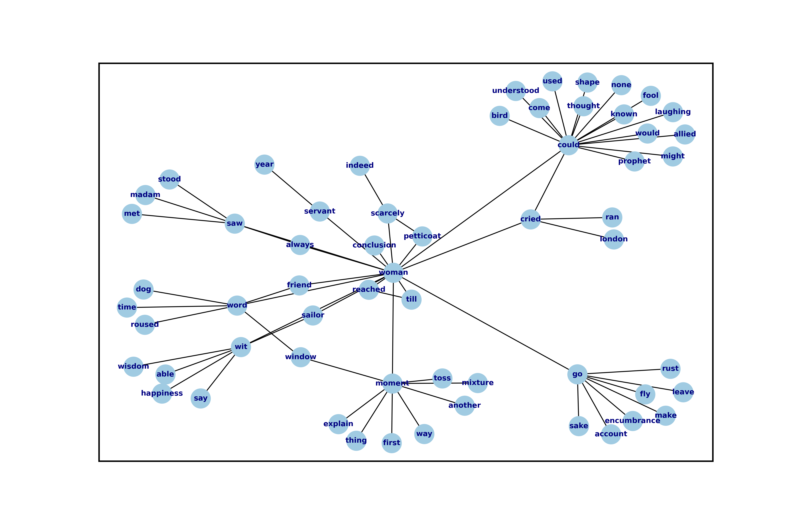

Table of Contents
1 one
1.1 chapter summary
The burden of this chapter is to describe how to do text analysis, or "distant reading," in a way that attends to queer concepts of gender performativity, and how that method might leverage computational processes to analyze literary material that expresses complex gender ontologies. This chapter proposes a method for text analysis to study the phenomenon of gender in Virginia Woolf's novel, Orlando: A Biography (1931).
I begin the chapter by critiquing what I call "the fantasy of
falsifiable criticism," which contrasts traditional distant reading
practices with experimental methods that deconstruct social
categories. My own method of text analysis draws from these
deconstructive approaches to create a new way for understanding gender
ontolgies in quantitative form. For the middle portion of the chapter,
I draw connections between computer programming and gender
theory. First, I delve into python programming, focusing on the
structure of the for loop and processes for cleaning and
regularizing text, with the goal of bringing out the recursive quality
of running python code. Then, I dip into Judith Butler's concept of
gender performativity, which lends an understanding to the ways that
critical processes can subvert dominant structures through iteration,
or what she calls "performative citation." To wrap up this section, I
do a close-reading of my source text, Woolf's Orlando, to examine
the ways that gender is closely coordinated with the significatory
power of language throughout the novel. In the final section of the
chapter, I apply Butler's notion of displacement through repetition in
gender performativity back to text analysis to illustrate how the
iterative process of analyzing text can surface new textual structures
that re-signify certain elements of that text. The chapter ends with
my text analysis of gender in Orlando to demonstrate how the terms
"man" and "woman" in that text are re-signified from their initial
binary structure into a plural understanding.
1.2 intro
The novel Orlando: A Biography (1928), by Virginia Woolf, famously opens with an assertive gender designation followed by an immediate qualification: “He–for there could be no doubt of his sex, though the fashion of the time did something to disguise it—-was in the act of slicing at the head of a Moor which swung from the rafters” (11). When performing quantitative text analysis on this text, the standard tasks of “pre-processing” the text evacuate the ways that gender is unsettled in this sentence. In order to computationally analyze a text, a process known as “distant reading” or “text mining” which involves calculating, generating, and visualizing textual patterns, the text must first be transformed into a computable format. This task of pre-processing (also called “cleaning” or “normalizing”) strips the original text of capitalized words, punctuation, “stop words” (such as articles and prepositions), and inflections in word endings, all of which are deemed to be semantically minor, in order to make the text amenable to quantitative analysis. After pre-processing Orlando, the following list of computable words, or “tokens,” remains in the first sentence:
‘could’, ‘doubt’, ‘sex’, ‘though’, ‘fashion’, ‘time’, ‘something’, ‘disguise’, ‘act’, ‘slicing’, ‘head’, ‘moor’, ‘swung’, ‘rafter’.
Cleaning this text not only strips it of its pronouns, including the gender assertion in the first word, “He.” It also cuts the em dash immediately following this "He," which signals the entrance of a narrator that layers this assertion with conspicuous certitude: "—-for there could be no doubt of his sex…."
This chapter examines how quantitative text analysis works with gender, using Woolf's Orlando as a test case. Text analysis borrows from quantitative methods in the social sciences to do analyses like topic modelling, sentiment analysis, and logistic regression, which involve tasks for identifying textual patterns, classifying textual elements and semantic structures, and calculating probabilities across text-based datasets. Though these methods differ in important ways, they share a faith in using the speed of computation, which can process very precise elements like word frequency or syntactic patterns, to analyze large collections of textual data. This chapter looks to moments where computational processes collapse or evacuate the nuances of gender, sex, and sexuality in literary text. Such moments engage what I call the "reproducible" methodologies in current distant reading scholarship, which largely analyzes gender in text as a binary system and reproduces this assumption in their results. To resist such methods, I explore how distant reading practices might borrow from the "iterativity" of gender theory in Queer Studies. Here, I take Judith Butler’s concept of gender performativity as a basis for modeling a new approach that uses text analysis to deepen the study of gender in Orlando.
1.3 the fantasy of the falsifiable
Because computers can process hundreds of texts at a time, "reading" at much faster rates than humans, they offer critics an opportunity for solving the problem of literary scale. This opportunity attracts literary critics like Franco Moretti, Ted Underwood, among others, who pose ambitious questions about literary history. According to Moretti, the process of quantification involves steps that reduce or abstract textual elements into computable form in ways that open the potential for analysis: "fewer elements, hence a sharper sense of their overall interconnection" (Graphs 1). 1 Moretti, who is largely responsible for popularizing the practice of "distant reading" in English Studies contexts, explores how social and economic forces impacts literary form in the development of the modern novel. His purview extends to thousands of texts from about 1750 to the present day–a database that would otherwise be too large and unweildy to analyze though non-digital means. According to Moretti, the computer not only enables large-scale analysis but creates a formal stucture for understanding texts, whereby "distance … is not an obstacle, but a condition of knowledge" (Distant Reading 48).
Underlying this desire for analyzing literature at scale is another desire to shore up the reliance on critical subjectivity in literary analysis. Moretti's early essay, "The Soul and the Harpy" (1983), lays out the reasoning behind developing a new methodological approach for literary criticism, which will eventually flourish into "distant reading." Moretti's positioning in this essay betrays a deep suspicion about the indulgence of critical subjectivity in analysis, which he casts as a concern about current methods of literary criticism, which he calls "a sort of cultivated accompaniment to reading" (21). By this, he means that the analytical practices of contemporary literary critics, which "revolve around concepts such as ‘ambiguity’ and the like" will "always be pushed into multiplying, rather than reducing, the obstacles every social science encounters when it tries to give itself a testable foundation" (22). Moretti offers a caricature of the "student" of literature to illustrate his critique:
The [student]–unless desirous of turning into that legendary figure whose only pleasure lay in contemplating his own reflection–must concentrate on the dissimilarities and ruptures: on what has been lost and become irretrievably unfamiliar, and which we can 're-familiarize' only by doing such violence to it that we distort the objective, material consistency of every work which it is the task of scientific knowledge to reconstruct and 'salvage'. 14
According to Moretti, literary criticism encourages the critic's narcissism. Moretti's alternative methodology borrows from the sciences to maintains the "objective, material consistency" of the work by minimizing the potential for difference and disagreement. Grounding the critical process on a more solid foundation, Moretti calls for a "falsifiable criticism" that can "test" literary interpretations (21). Falsifiable here means that it must be contestable–one must be able to imagine an alternative to ensure hypothesis can be meaningfully tested. Falsifiable criticism pursues interpretations as "coherent, univocal, and complete," where the "results" can be compared with "data" which "appear contradictory or inexplicable in the light of the hypothesis itself" (21). Moretti here envisions a literary criticism that would steadily progress toward irrefutable knowledge: "The day criticism gives up the battle cry ‘it is possible to interpret this element in the following way’, to replace it with the much more prosaic ‘the following interpretation is impossible for such and such a reason’, it will have taken a huge step forward on the road of methodological solidity" (22).
Moretti's falsifiable criticism eventually grows into "distant reading," and particularly, "quantitative formalism," which attributes the bulk of analytical work to computational and visualization processes, and relegates the literary critic to the role of explaining the results of the computer's analyses. The essays in his most popular collection, Distant Reading, demonstrate the streamlining of his critical method into a recursive process of posing hypotheses, collecting and assembling data, and making inferences. The results are often unexpected, and sometimes bring Moretti to reframe his hypotheses. For example, in “Style, Inc.: Reflections on 7,000 Titles (British Novels, 1740-1850),” Moretti plots book titles on a series of graphs in order to explore how market forces influence the size and content of the titles. He finds that titles are quite sensitive to the market: "As the market expands, titles contract; as they do that, they learn to compress meaning; and as they do that, they develop special ‘signals’ to place books in the right market niche” (204). Moretti's incisive interpretation, which is borne by the various graphs of title lengths over time, obscures the fact that it is, fundamentally, an interpretation. A closer look at his language betrays the extent to which he makes interpretative moves at every step:
in what follows, I focus on three moments of this history: first, I describe a major metamorphosis of eighteenth-century titles, and try to explain its causes; next, I suggest how a new type of title that emerged around 1800 may have changed what readers expected of novels; and finally, I make a little attempt at quantitative stylistics, examining some strategies by which titles point to specific genres. Three sections, three pieces in the large puzzle of the literary field. (181-2; emphasis mine)
Moretti’s word choices diminish the subjective work of critical analysis–he describe[s], tr[ies to explain, suggest[s] and make[s] a little attempt, examin[es]. This language presents the literary critic's work as an objective description of unproblematic reality, as if his conclusions are supplementary to the graphs and other visualizations. However, it is Moretti who poses the question, inputs the data, and draws conclusions from the graphs. The computer's ability to quantify textual data emboldens Moretti toward making seemingly objective claims about literary history, all the while diminishing his role as in analysis.2
The faith in the "falsifiable," or the objectivity of quantitative methods, even affects those who are critical of its use in literary studies. For example, Nan Z. Da argues that quantitative methods, which trade "speed for accuracy, and coverage for nuance," reveal a "fundamental mismatch betwen the statistical tools that are used and the objects to which they are applied," (620, 601). In her critique, which cites "technical problems, logical fallacies," Da emphasizes the lack of reproducible results–that one researcher's process can be reproduced by another researcher with identical output (601). She demonstrates her point with an experiment in Topic Modeling, which generates a number of "topics" from a textual corpus and is often used to "speed-read" massive datasets to get a sense of their content. Da attempts to verify the results of a Topic Modeling experiment by replicating the process on her own machine, a replication which fails. She concludes that, "if the method were effective, someone with comparable training should be able to use the same parameters to get basically the same results" (628-629). As Ben Schmidt points out, however, Da in fact uses different parameters and software to run her experiments, which explains her results. His critique points out that Da, in taking down the quantification for literary studies, reinforces its role in positivist inquiry:
Rather than pooh-pooh statistical reasoning, she elevates it by incanting the language of quantification against itself. Far more than anyone I’ve seen in any humanities article, she asserts that scientists do something arcane, powerful, and true. 3
Despite their vastly different committments and conclusions, Da and Moretti align on the value that they place in the objective capacieis of computational analysis. For both scholars, there is a implicit faith that the computer can do some of the analytical work that has been traditionally ascribed to the human.
With similar investments in studying literary history, Ted Underwood works to visualize the "distant horizon" of literary trends across centuries. Part of Underwood's project uses predictive data analysis, in which a sample of data is used to make predictions about larger groups of data, to study the way that gender markers in novels change over time. This process involves using computer programs which are "trained" by certain data sets to create new programs that can then make predictions on other datasets. Underwood calls his approach "perspectival modelling," explaining that "Since learning algorithms rely on examples rather than fixed definitions, they can be used to model the tacit assumptions shared by particular communities of production or reception" ("Machine Learning and Human Perspective" 93). Dan Sinykin claims that Underwood's ingenuity comes from reworking statistical methods from "measurement to modelling." Rather than simply report patterns from the data, Underwood uses "perspectival modeling," in this case, logistic regression analysis, to to model relationships between patterns, as a point on a continuum between two perspectives. According to Sinykin, this method allows Underwood "to leverag[e] the human prejudices built into modeling toward humanistic ends" (par. 4).
Unlike Moretti, Underwood demonstrates an awareness about bias contained with computational processes. He explains that "Machine learning algorithms are actually bad at being objective and rather good at absorbing human perspectives implicit in the evidence used to train them" ("Machine Learning and Human Perspective" 92). In his study of gender from the 18th to the 21st century, for example, Underwood carefully asserts that these models suggest, not the truth of gender ontology, but the approaches and choices made by those who create the models. This project examines gender roles in novels by using a model that predicts the the sex of a fictional character based on the words associated with that character. Underwood explains the process of training the predictive program:
We represent each character by the adjectives that modify them, verbs they govern and so on–excluding only words that explicitly name a gendered role like boyhood or wife. Then, we present characters, labeled with grammatical gender, to a learning algorithm. The algorithm will learn what it means to be 'masculine' or 'feminine' purely by observing what men and women actually do in stories. The model produced by the algorithm can make predictions about other characters, previously unseen. Distant Horizons 115
This particular model reveals that that, over time, gender roles in novels become more flexible while the actual number of female characters declines (Distant Horizons 114). One of the many explanations for this result, Underwood reasons, is that the practice of writing becomes more commonly pursued as a male occupation in the middle of the 20th century than it was previously (Distant Horizons 137). This fact, coupled with the tendency of men to write more about men than women, suggests why less women writing would led to a decline in female characters. This explains how Underwood's seemingly paradoxical conclusion, that gender roles become more flexible while the actual prevalence of women dissapates from fiction, might be possible.
Underwood's methodology, however reinscribes the binary that he attempts to deconstruct. First, his specific method for text analysis is logistic regression analysis, which is made for modelling binary variables. A logistic regression expresses information in the form of a probability, often between yes/no, pass/fail, win/lose, etc. In Underwood's case, the probability is male/female. The output therefore conforms to this binary model. In other project where he similarly measures the "transformations" of gender across time periods, Underwood explains that simplification is necessary ("Machine Learnig and Human Perspective" 93).4 In this project, Underwood admits that he needs a "simple" model in order to bring into relation the dynamics of gender (See Fig. 2). He explains:
I recognize that gender theorists will be frustrated by the binary structure of the diagram. To be sure, this binary has folded back on itself, in order to acknowledge that social systems look different from different positions in the system. But the diagram does still reduce the complex reality of gender identification to two public roles: men and women. I needed a simple picture, frankly, in order to explain how a quantitative model can be said to represent a perspective. "Machine Learning" 98
In aiming for simplicity, Underwood indicates that his initial assumptions will affect the final result. Although he considers the possibility that he finds a structural tension between gender "because [he] explores gender, for the most part, as a binary opposition" (Distant Horizons 140), the assumptions behind the categories male and female remain beyond his study. Collapsing of gender into a single graph reifies the structural categories of male and female, rather than deconstructing them. This process is replicated as the search for meaning takes on other texts, imposing the same structure on new material. Underwood himself states: "the data I can legally provide – lists of word frequencies associated with each volume or fictional character – should allow intrepid readers to retrace the most debatable parts of the argument. An argument that can be retraced in this manner is 'reproducible'" (Underwood, Distant Horizons 173). Asking a machine to compute the conscription of gender as male or female for the purpose of seeing how male and female roles in novels change over time only creates a model of gender that is "simple" enough to be computed.
 Caption: Underwood's logistic regression model
Caption: Underwood's logistic regression model
Some text analysis practitioners, in contrast to Moretti and Underwood, apply these or similar tools toward exploratory methodologies, harnessing what Stephen Ramsay calls "the objectivity of the machine" to do self-consciously subjective work (CITATION FROM READING MACHINES). Ramsay's methodology, which he calls "Algorithmic Criticism," take the constraints of computation as a liberating force that allows the critic to reflect on her own phenomenal experience of texts rather than seek definitive answers. Acknowledging that quantitative analysis can reproduce assumptions, such methods avoid falling into the fantasy of falsifiable criticism.
Going further than Ramsay, critics like Edwin Roland and Richard Jean So apply exploratory methods to study some of the more slippery concepts of social categories, such as questions of racial identity and discourse. So and Roland explore the constructedness of racial categories by experimenting with an algorithm that evaluates an author's race according to the vocabulary used by the author. Applying this algorithm to analyze a large corpora of novels by white and black authors, they find that, black authors, in general, display more varied vocabulary than white authors (66). From this they infer that white authorship, as a category, only coheres against the variance of black authorship. Whiteness, as they explain, depends on the characterization of blackness.5
This quantitative exercise, rather than draw So and Roland toward making general conclusions about race and authorship, points them toward a peculiarity in the results: that the algorithm wrongly categorizes James Baldwin's novel Giovanni's Room (1956) as being written by a white author. Apparently, the computer reads Baldwin's use of the term "appalled" as proof of white authorsip. Going back to examine this word in the text, So and Roland discover that this term occurs only once, in the early scene where David (the narrator) describes his strained relationship to his father: "I did not want to be his buddy. I wanted to be his son. What passed between us as masculine candor exhausted and appalled me" (my emphasis; Rpt. in So and Roland 71). Noting the connotations of whiteness in "appalled," which has the middle French root, "apalir," meaning "to grow pale," So and Roland insightfully conclude that this term indexes an intersection of gender with race: "the moment David develops a troubled relationship to normative masculinity [as] also the moment he becomes 'white'" (71). The computer's misclassification, as they point out, reinforces this text's notorious elision of explicit references to race, whereby racial markers are displaced in favor of an implicit whiteness, as critics have observed in the scholarship on this novel. Taking the computer's mistake as a starting point, So and Roland's analysis thus contributes to the ongoing debate about the complex relationship between race and sexuality in the novel.
In a sense, So and Roland are confronting the same problem as Da: what is the effect of computational error in literary criticism? But instead of writing off quantitative methods, they suggest an interesting way out of the problem–to use the error as a starting point for further analysis. Because race is a social construct, and machines only impute meaning that is encoded into them, So and Roland reason that machines are be ideal instruments for studying the construction of race (60). This single computational error opens a site for more daring leaps of speculation about how whiteness gestures toward a troubled understanding of gender and potentially, sexuality. In this way, computational methods, which work to "identify and label objects," may operate in tandem with minority discourse analysis, which "critique[s] and problematize[s] the very idea of categories" (So and Roland 63). So, rather than being "fundamentally mismatched," in Da's words, computational methods can be harnessed to deconstruct social categories (Da 620).
Just as quantification can probe racial categories, so it can destabilize gender ones. Laura Mandell, for example, uses distant reading to deconstruct what she calls the "M/F binary," which is the reduction of gender into data. In her critique of Matthew Jockers and Jan Rybicki, Mandell demonstrates that the M/F binary reifies stereotypes in their premises, by "presenting conclusions about 'male' and 'female' modes of thinking and writing as if the M/F terms were simple pointers to an unproblematic reality, transparently referential and not discursively constituted" (par. 5). Mandell's examination marshalls key findings from feminist theory, drawing from Judith Butler, among others, to assert that gender is a socially constituted category which is "constructed both by the measurer and the measured" (par. 38).
To deconstruct gender, Mandell turns to genre, another category which will allow scholars to see the reductive constitution of categories generally. To study genre, Mandell uses the popular stylometry measurement, "Burrow's Delta," which visualizes the "distance" between writing styles by creating branches (or "deltas") between different texts. Her experiment finds that the stylistic qualities of a female writer, Mary Wollenstonecraft, shares with those of male writers: "Wollstonecraft’s sentimental anti-Jacobin novels most resemble [William] Godwin’s sentimental anti-Jacobin novels… whereas her essays most resemble [Samuel] Johnson’s writings" (par. 29). Just as quantification can deconstruct what So and Roland describe as "the machine's initial binary understanding of white and black," so it can deflate the M/F binary (So and Roland 68). Moving beyond deconstruction, however, Mandell encourages rearchers "to experiment with new taxonomies of gender," creating new categories that reflect gender as a multiplicity (par. 37). Mandell emphasizes the potential for complex data models to "break the strength of the signal" by creating categories such as "'men writing as men,' 'women writing as women,' 'women writing as men,' 'men writing as women,' 'unspecified (anonymous) writing as men,'" and so on (par. 35). She points out that the computer allows researchers to "animate numerical processes rather than fixing their results as stereotype" (par. 7). It offers, in Mandell's words, "parallax, multiple perspectives for viewing a very complex reality” (par. 38).
Mandell's work opens up the consideration of how gender theory, in particular, Butler's theory of gender performativity, might influence computational analysis. However, her reading of Butler recapitulates an assumption about performativity that Butler has been careful to clarify in her writings since Gender Trouble. Mandell argues that both gender and genre as a performance "are… highly imitable" (par. 30), and asserts that "Anyone can adopt gendered modes of behavior, just as anyone can write in genres stereotypically labeled M/F" (par.30). However, as Butler emphasizes in her later work, performativity is compulsory and habitual, a process, rather than a singular act which can be imitated at will. Butler explicitly warns against the interpretation that gender is decided by the subject, to be put on and off at will like clothing, and instead asserts that gender precedes and constitutes the subject. Gender functions more like a mechanism that allows the subject to emerge: "construction is neither a subject nor its act, but a process of reiteration by which both 'subjects' and 'acts' come to appear at all" (Bodies xviii).
This reading of Butler brings up the question of performativity, and in what ways it can might align with computational processes. As So, Roland, and Mandell demonstrate, the constraints of computation can help point the bounds of social categories as a constructed phenomenoa. In what follows, I demonstrate how gender, in particular, and computation, share a high level of constraint, which can be mutually reinforcing in text analysis. As Mandell points out, "Computation enables complexity" (par. 36), and gender, like computation, contains rules and protocols that build toward higher levels of complexity. In the next section, I will examine how the constraints of computation align with those of gender theory and analysis.
1.4 NLTK, Gender Trouble, Orlando
1.4.1 Python and NLTK
This section now turns to the programming language Python to get a closer look at how text analysis works through constraint. We will look into Python's syntax to examine the processes and protocols for cleaning text.
To do common text analysis tasks, where text passed through an
automated seive to find patterns, many distant reading projects use
the Python programming language, which offers a number of custom
"libraries," or collections of code for specific tasks, such as
analyzing textual data. The most popular text analysis library in
python is the Natural Language ToolKit (NLTK), which contains useful
computational "methods" and "functions" that count, categorize, and
visualize textual patterns. One such method, concordance(), will
return all the immediate words surrounding a chosen word. For example,
below is a concordance of the word "woman" from the text of Orlando,
which shows the context of the first 25 instances of this word in the
novel:
charm – all qualities which the old woman loved the more the more they failed yed her cheeks scarlet . For the old woman loved him . And the Queen , who knew rladen with apples . The old bumboat woman , who was carrying her fruit to mark a figure , which , whether boy 's or woman 's , for the loose tunic and trouser , for alas , a boy it must be – no woman could skate with such speed and vigo s not a handsbreadth off . She was a woman . Orlando stared ; trembled ; turned mult of emotion , until now ? An old woman , he answered , all skin and bone . e for sea birds and some old country woman hacking at the ice in a vain attempt h their heat , and pity the poor old woman who had no such natural means of tha agan ; of this man 's beard and that woman 's skin ; of a rat that fed from her of melancholy ; the sight of the old woman hobbling over the ice might be the c en waters or night coming or the old woman or whatever it was , and would try t anners were certainly not those of a woman bred in a cattle-shed . What , then st career in the world for a Cossack woman and a waste of snow – it weighed no arms and vociferating . There was a woman in white laid upon a bed . Rough tho y , and when the Moor suffocated the woman in her bed it was Sasha he killed wi the cobbles , or at the rustle of a woman 's dress . But the traveller was onl hant , making home belated ; or some woman of the quarter whose errand was noth in water he hurled at the faithless woman all the insults that have ever been obinson by way of making a Christian woman of her , understood what they were a ght or the left ? The hand of man or woman , of age or youth ? Had it urged the with sobs , all for the desire of a woman in Russian trousers , with slanting
- like a dog chasing a cat or an old woman blowing her nose into a red cotton h
to talk about – a dog , a horse , a woman , a game of cards – seem brutish in out somehow to allude to this humble woman and her milk-pails , when the poet f
This concordance() method is related in its process to another one,
similar(), which also uses word context to calculate its output. The
result for running similar on the word "woman" is the following:
man moment night boy word world child pen ship door one room window light little lady table book queen king
To compute the results of similar(), NLTK first takes the context of the term from
concordance(), then it searches the text for other terms that
contain similar contexts. In this sense, the similar() method
searches the text for words that appear similarly to the chosen
word. It is a useful strategy for getting a sense of which words are
treated in comaprable ways across the text.
In order to run methods like concordance() and similar(), however,
the text needs to be ready for analysis. As illustrated in the opening
example in this chapter, the process of preparing a text for text
analyis always requires a reduction of data in which some semantic
value has escaped. In this example, "cleaning" the first sentence of
Woolf's novel, Orlando, strips it of its pronouns and punctuation
which has the effect of surpressing the gender qualification: "He–for
there could be no doubt of his sex, though the fashion of the time did
something to disguise it—-was in the act of slicing at the head of a
Moor which swung from the rafters" (11). After processing, the
following words remain:
‘could’, ‘doubt’, ‘sex’, ‘though’, ‘fashion’, ‘time’, ‘something’, ‘disguise’, ‘act’, ‘slicing’, ‘head’, ‘moor’, ‘swung’, ‘rafter’.
The emphasis on readability in Python's vocabulary and syntax makes it
a relatively straightforward programming language, where beginners may
intuit the gist of the code by simply reading it. For example, the
expression print(1) will display the number 1 when executed. The
below program sets a variable x to the number 1, uses an if
statement to check if the variable is set to the number one, and
prints the string x equals 1 if the answer is affirmative:
x = 1
if x = 1: print('x equals 1')
When analyzing text, Python works with data in the form of words, or
strings, contained within groupings called lists. Then, Python
iterates through the list, that is, it performs a similar task to
each item in the list. For this purpose, an expression called the for
loop consists of six words over two lines which instruct Python to do
something to each item in the list, in other words, to "loop" through
data, carrying out some specified action to each peice. A for loop
that iterates through the first sentence of Orlando would consist of
the following:
sentence = ['He', '–', 'for', 'there', 'could', 'be', 'no', 'doubt', 'of', 'his', 'sex', ',', 'though', 'the', 'fashion', 'of', 'the', 'time','did', 'something', 'to', 'disguise', 'it', '–', 'was', 'in', 'the', 'act', 'of', 'slicing', 'at', 'the', 'head', 'of', 'a', 'Moor','which', 'swung', 'from', 'the', 'rafters']
for word in sentence: print(word)
Here, the first sentence of the novel is saved as the variable,
sentence. Then, the for loop instructs the computer to display
each word in this sentence. The first line of the loop (for word in
sentence:) specifies each word in the list, and the second line
(print(word)) instructs the computer to display each word in the
sentence. Essentially, this loop will go through each item in the
data, in this case, each word saved in the list sentence, and it
will print or display that data.6 The the output will appear
thus:
['He', '–', 'for', 'there', 'could', 'be', 'no', 'doubt', 'of', 'his', 'sex', ',', 'though', 'the', 'fashion', 'of', 'the', 'time', 'did', 'something', 'to', 'disguise', 'it', '–', 'was', 'in', 'the', 'act', 'of', 'slicing', 'at', 'the', 'head', 'of', 'a', 'Moor', 'which', 'swung', 'from', 'the', 'rafters']
These kinds of iterative computations, which are central to
programming tasks, are a core component of working with text. At a
very basic level, much of text analysis consists of iterating over
bits of text and doing something to each bit. In preprocessing, the
main tasks include tokenizing, cleaning, and regularizing the text,
which helps to eliminate pieces of text that will skew or slow results
of analysis due to their high frequency and low semantic
value. Tokenizing the text means separating the text into workable
units, or tokens, that are easier to clean and regularize. Once the
text is tokenized, it can be stripped of capital letters, punctuation,
and what are called "stop words," which consist of prepositions,
articles, and related terms, such as "he," "for," "there," "be," "of,"
"the," and "did" in the above example. The following code block loops
through the text to remove punctuation and capital letters:
lowernopunct = [] for word in fulltext: if word.isalpha(): lowernopunct.append(word.lower())
Here, it begins by creating an empty list, lower_no_punct, where
words will be dropped after filtering through them. The next line
begins the for loop, which iterates through each word in the
full_text list of words. The third line, an if statement creates
the condition specifying alphabetic characters (containing no numbers
or punctuation), and if the word fulfills that condition, then it
passes to the fourth line, which will add that word to the
lower_no_punct list. At the moment that this word is added to the
list, its letters will be transformed to lowercase format. The final
list, therefore, will contain words that are all lowercase and contain
no punctuation.
Using Python's brevity, we can accomplish the above with just one line of code, which is known as a "list comprehension":
lowernopunct = [word.lower() for word in tokens if word.isalpha()]
Reading from left to right, this expression first creates an empty
list, called lower_no_punct. Then, for each word in the text, it
makes the word entirely lowercase, and if that word is alphabetic, it
will be added to the empty list. Expressions like this one condense
the processes and conditions contained within the previous block of
code into one line.
To remove stop words, for example, we can use another list comprehension:
nostops = [word for word in lowernopunct if word not in stops]
This expression takes each word in a list, in this case,
lower_no_punct, and checks to see if that word is also contained
within the list of stop words in stops. If the word is not a stop
word, then it will be added to a new list, no_stops. Once this
filtering is done, the final list contains all lowercase words without
punctuation or stop words. For example:
['could', 'doubt', 'sex', 'though', 'fashion', 'time', 'something', 'disguise', 'act', 'slicing','head', 'moor', 'swung', 'rafters']
After cleaning the text in this way, the next step is regularization, which includes stripping the grammatical structure to get the word root. One of these processes, called "stemming", involves cutting off the endings from the word. For example, "rafters" will be stripped to "rafter." In another process, called "lemmatizing," the computer will look up each word, one by one, find its appropriate root, and then revert to that root.
There are two aspects about the cleaning and regularizing process that merit some attention: the first is recursion. The cleaning and regularizing process is highly recursive, doing the same action to each item to the list of words that make up the text. The logic of the code reinforces this recursiveness, especially in the loop which iterates through items in a list, doing the same thing to each item, one by one. Additionally, the code's nested expressions reinforce recursion, as each line specifies another action to be performed on each word. For example, in the following code block, the first line isolates a word from the list, the second line checks if that word contains only alphabetic characters, and the third transforms that word to lowercase. Each of the three lines performs an additional task on the same word.
The second notable aspect about the cleaning and regularizing process is reduction. These tasks of preprosessing text force words into existing boxes, so to speak, in order to make them amenable to analysis. The effect of this preprocessing therefore strips text of some of its semantic meaning, which can be contained in capitalized words, rhythms of language in stop words, inflections in word endings, and so on. This is not to say that preprocessing ought to be avoided, but that the researcher should be aware of how certain textual reductions have the potential to affect meaning.
1.4.2 Butler and Gender Performativity
Now that we have a sense of Python, and its qualities of recursion and reduction, I will turn to gender. In her groundbreaking book, Gender Trouble: Feminism and the Subversion of Identity (1990), Judith Butler famously disrupts popular theorizations about sex and gender in contemporary feminist thought: namely, that sex is biological while gender is constructed; and that the gender, as a construction, is a self-expression of the subject. According to Butler, sex and gender are both social constructions, and there is no such thing as a stable gender identity, or even a subject that exists prior to gender expression. Rather, Butler argues, gender is performative–a series of repeated acts by which the subject performs normative gender roles. In her follow up book, Bodies That Matter (1995), Butler further delineates the process of gender performativity, where what is experienced as the physical body, its boundaries and its sexuality, only materialize through the repetition, or what she calls the "citation," of gender norms. Her concept of "citation" emphasizes the iterability of the performative practice, whereby each action implicitly signals an authorizing norm.
As I will demonstrate, this theory of gender performativity has a lot to lend to the study of computational text analysis. Before moving to the details of Butler's theory, however, it is important to situate her work within the context of second-wave feminism, and in particular, with the work of feminist theorist Luce Irigaray, whom Butler draws from. Writing in the 1970s and 80s, Irigaray takes Jacques Derrida's concept of phallogocentrism–that man, symbolized by the phallus, is the center and focus of knowledge–as a lens for her critical analysis of the ways influential Western thinkers like Plato, Aristotle, and Freud have discussed women and feminity; which she claims "has always been conceptualized on the basis of masculine parameters" (Irigaray, The Sex Which Is Not One 23). In one essay, Irigaray demonstrates how the binaries like form/matter and bodies/souls, which associate "woman" with "matter" (materiality or the mother) and set it subordinate to male "form" (rationality), erases the possibility of representing woman at all. Butler points out that this binary, which claims to represent the feminine as the subordinated term in masculine/feminine binaries, actually "produces the feminine as that which must be excluded for that economy to operate" (10). In other words, the feminine which appears in the feminine/masculine binary is a "domesticated" feminine, and the other feminine, which is excessive, remains outside the binary (13). Butler calls the "field of disruptive possibilities" which exist outside the binary (13) the "necessary outside," which creates the conditions for the binary to exist in the first place. She then describes what Irigaray describes as the "unspeakable" feminine within this field:
One cannot interpret the philosophical relation to the feminine through the figures that philosophy provides, but, rather, [Irigaray] argues, through siting [sic] the feminine as the unspeakable condition of figuration, as that which, in fact, can never be figured within the terms of philosophy proper, but whose exclusion from that propriety is its enabling condition. 12
Because phallogocentrism determines all expression, this outside feminine is "unspeakable," remaining beyond figuration and expression. Butler illustrates this quandry with a question: "how can one read a text for what does not appear within its own terms, but which nevertheless constitutes the illegible conditions of its own legibility?" (11). For Butler, this question–how to express what is not there, what is refused by the system of the visible–will guide her theorization of gender subversion, what she calls resignification, through performativity.
The process of resignification begins with an examination of the referential power of language. Butler first posits a body that exists prior to signification, that is, a body that has not yet been imbued with meaning through language. She wonders, "Can language simply refer to materiality, or is language also the very condition under which materiality may be said to appear?" (6). Butler finds that, in order to refer to a body, language must first posit that body, and in the positing the body, the body assumes meaning. Therefore, she reasons, the signification of the body actually creates the body which it appears to reference: "This signification produces as an effect of its own procedure the very body that it nevertheless and simultaneously claims to discover as that which precedes its own action" (emphasis original; 6). Butler explains that "the mimetic or representational status of language…. is not mimetic at all. On the contrary, it is productive, constitutive, one might even argue performative" (6). This point, that language produces the reality that it claims to merely reference, has two crucial ramifications: first, that subjects are always interpellated, and in fact brought into subjectivity, by a discourse prior to their their participation in it; and second, that this productive power of language nonetheless offers a way out of the significatory circle.
For, amid this regulatory structure lies the possibility of what Butler describes as resignifying meaning. Because language transcends a merely representative function, because it works to produce meaning, language can be resignified toward subversive usages by "citing" what Bulter calls the "repudiated" meaning implied by signification. Butler offers a rather famous example in the resignification of the term "queer," which has been transformed from a term of abjection to one of empowerment. "Queer" achieves this resignification by harnessing its own repudiation, which is an implied but "disavowed abjection [that] will threaten to expose the self-grounding presumptions of the sexed subject" (3). In other words, each time the term "queer" is used, it draws from that abjection which is repudiated in every identification with heterosexuality. Butler proposes that one "cite" this repudiation as a resource for resignification: "to consider this threat and disruption… as a critical resource in the struggle to articulate the very terms of symbolic legitimacy and intelligibility" (3). Here, the concept "citation" indicates an act of signification that draws from the authorizing power. By citing the repudiated meaning, the term "queer" "resignifyi[es] the abjection of homosexuality into defiance and legitimacy" (xxviii). The resignification works because this "performative citation" takes on the repudiation as its signification.
Because language is productive, it also offers a possibility of resistance from within the signification system. Butler illustrates how Irigaray achieves this resistance by performing the phallogocentric language of the thinkers that she criticizes: "she mimes philosophy… and, in the mime, takes on a language that effectively cannot belong to her" (12). Butler reads Irigaray's use performative citation as a strategy of undermining his authority through repetition: "She cites Plato again and again, but the citations expose precisely what is excluded from them, and seek to show and to reintroduce the excluded into the system itself" (18). Through repetition, Irigaray displaces the logic of phallogocentrism, introducing something external to the system while remaining within its terminology. Narrating what Butler imagines to be Irigaray's thought process in an invigorating monologue, she lays out the process of resistance:
I will not be a poor copy in your system, but I will resemble you nevertheless by miming the textual passages through which you construct your system and showing that what cannot enter it is already inside it (as its necessary outside), and I will mime and repeat the gestures of your operation until this emergence of the outside within the system calls into question its systematic closure and its pretension to be self-grounding" (18).
In this description of resistance within the cycle of signification, where deception emerges from resemblance and insubordiation through subservience, the key is repetition. Resistance looks like repetition, a continual activity, the miming of the authorizing norm, which displaces it by introducing what is outside the logic of phallogocentrism.
Before moving forward, it is important to discuss some of the criticism of gender performativity since Gender Trouble was published in 1990. It has had two significant critiques, one from the field of Trans Studies and the other from political philosophy more generally. Both of them concern Butler's concept of gender performativity as a discursive phenomenon. Jay Prosser discusses the mutual imbrication between Trans and Queer Studies: while Queer Studies created the conditions for the emergence of Trans Studies, it also depends on the figure of the transgender and cross-gender identification in its theorizations. Beyond the common (and obvious) critique Butler's use of drag in her famous description of gender performativity in Gender Trouble, Prosser critiques Butler's "deliteralization of sex" in Bodies that Matter, her follow-up to Gender Trouble (27). Prosser's critique–which applies to Queer Studies generally–is that Butler's analysis elides the materiality of the body. He points out that Butler reads the figure Venus from Gender Is Burning as transgressive only because she was not able to attain her sex change, which would "make [her]self complete" (45). In other words, Prosser points out that according to Butler, a sex change that fulfills the desire for a masculine body would reinscribe heterosexual hegemony. This "metaphorization of the transgender body" demonstrates one crucial way that Queer Theory has subsumed transgressive desires in cross-gendered identifications without reckoning with the material body and its real and precarious existence, as Venus's death illustrates (55).
The other critique concerns a logical inconsitency in the way that Butler theorizes subjectivity. If the resistance to signification comes from outside the cycle of signification, from where does that external resistance emerge? Does it not imply a pre-discursive identity or at least desire for resistance? Geoff Boucher writes that Butler locates the potential for subversion "in a disembodied intentionality that appears to stand outside of the culturally-scripted subject positions that the individual occupies" (115). He aptly questions: "Who (or what) decides 'how to repeat'? On what basis is the decision to subvert power made?" (119).
These critiques are generative because they bring to the surface the qualities of Butler's theory which makes it amenable to studying text analysis. That is, these critiques surface aspects, such as executable language and recursivity, respectively, which will help to understand how programmatically analyzing text might align with the study of gender.
1.4.3 Woolf's Orlando
I now turn to looking at gender in Virginia Woolf's novel, Orlando: A Biography. For those who are unfamiliar with the text, Orlando is a fictional biography that follows the life of the eponymous 16th-century English nobleman as he undergoes a sex change and lives into the 20th century as a woman. In what is perhaps the most salient example of transgender narrative in the modernist era, Orlando deploys a characterisitic modernist experimentation with language and its limits to explore the instability of gender and gender norms. One scene early in the novel, where the protagonist meets a russian princess named Sasha, is the first of many where the problem of gender is coordinated to a problem of language. For Orlando, the problem of language and gender has to do with signification–he cannot resolve how to express either one–which arises when he first sees Sasha:
He beheld, coming from the pavilion of the Muscovite Embassy, a figure, which, whether boy's or woman's, for the loose tunic and trousers of the Russian fashion served to disguise the sex, filled him with the highest curiosity. The person, whatever the name or sex, was about middle height, very slenderly fashioned, and dressed entirely in oyster-coloured velvet, trimmed with some unfamiliar greenish-coloured fur. But these details were obscured by the extraordinary seductiveness which issued from the whole person. Images, metaphors of the most extreme and extravagant twined and twisted in his mind. He called her a melon, a pineapple, an olive tree, an emerald, and a fox in the snow all in the space of three seconds; he did not know whether he had heard her, tasted her, seen her, or all three together…. A melon, an emerald, a fox in the snow–so he raved, so he stared. When the boy, for alas, a boy it must be–no woman could skate with such speed and vigour–swept almost on tiptoe past him, Orlando was ready to tear his hair with vexation that the person was of his own sex, and thus all embraces were out of the question.
Sasha's skilled atheleticism and exotic manner of dress preclude an unambiguous reading of gender. Orlando's use of seemingly arbitrary metaphors, "a melon, a pinapple, an olive tree, an emerald, and a fox in the snow," betray his attempt at gender signification that also fails. His frustration here appears to feed his attraction, as with each doubting moment Orlando appears more and more desperate, "ready to tear his hair with vexation."
As Sasha's probable gender oscillates between male and female throughout passage, Orlando's desire crescendos. The narrative voice and form of the sentences in this scene also shape the building tension: the narration alternates interiority and description a in free indirect discourse that jumps abruptly between narration and interjections, to express a cyclical quality about Orlando's confused mental state. The effect is to mirror with language the tortuous thought process that Orlando undergoes as he guesses then doubts the reality of Sasha's gender. While the tension thus mounts throughout the passage, the relationship between gender and language comes to a climax:
But the skater came closer. Legs, hands, carriage, were a boy's, but no boy ever had a mouth like that; no boy had those breasts; no boy had eyes which looked as if they had been fished from the bottom of the sea. Finally, coming to a stop and sweeping a curtsey with the utmost grace to the King, who was shuffling past on the arm of some Lord-in-waiting, the unknown skater came to a standstill. She was not a handsbreadth off. She was a woman. 27-28
The tension finally ebbs as Orlando settles on Sasha's gender. The unfolding phrases and clauses in the narration whittle into the simple declarativity: "She was a woman." Through the use of figuration and form, passage uses language to situate gender as something difficult to grasp. At the same time that Orlando cannot place Sasha's gender, he also cannot find the right words to describe her. If gender is ambiguous, then language is also imprecise.
Much of the scholarship on this text explores its resistance against normative concepts of identity and gender. The experimental use of language and narrative form creates a narrative that is recalcitrant against coherent understandings of gender and identity. Jane de Gay, Jill Channing, and Christy L. Burns, for example, assert that Woolf deploys imaginative elements, magical realism, and parody, respectively, to resist realism and narrative expectations in her fictional biography. De Gay aligns Woolf's writing with that of Walter Pater and Vernon Lee as a "feminist historiography" that "rejected Victorian patriarchal metanarratives" and instead "used the strategies of fiction to bring history alive and make it live in the present" (de Gay 71). In a similar vein, Burns and Channing both point out that Woolf uses fantastical elements, in the former in the service of parody, and the latter as part of magical realist writing, that disrupt expectations of plot and narrative to challange the stability of gender and identity.
Doubling down on the role of langauge, other critics further emphasize that the narration purposefully obfuscates any resolution about concepts like gender, identity, and even race and nationality. Victoria L. Smith asserts that "The fantastic content in the novel is directly linked to the undecidability/impossibility of the form of the novel and of the protagonist" (58). Various scenes, like the one with Sasha ice-skating, "thematizes within the text how representation or, rather more particularly, how literary language finds itself at a loss" (Smith 68). According to Smith, the narrative handles such scenes in a way that "offers a recuperation of the object while bemoaning the inadequacy of language" (Smith 68). Pamela Caughie zeroes in on the indeterminacy language, finding that it purposefully precludes a straightforward understanding of sex and gender; as a result, "sex cannot be separated from text, the grammatical from the gendered" (Caughie 51). According to Caughie:
"Orlando works as a feminist text not because of what it says about sexual identity but because of what it manages not to say; not because of what it reveals about the relation between the sexes but because of what it does to that relation; not because its protagonist is androgynous but because its discourse is duplicitous" (Caughie 41).
This argument, that Orlando's subversiveness is s discursive one, that it operates through language, has led to further critiques of its political significance, particularly in its discourse on nationalism. Jamie Hovey and Jessica Berman both explore how the text challenges the boundaries of national identity through an implicit critique of imperialism, a critique that emerges from the privileged position of the white, British persective. Hovey remarks that Orlando is "an ambivalent articulation of English nationalism," a nationalism that intersects with (and depends on) gender and race (Hovey 394). Displacing the oppressive effects of nationalism to racialized and sexually transgresive subjects, the novel "allows the protagonist to pass as respectible and heterosexual" (Hovey 398). Bringing the question of transsexuality to the fore, Berman argue that as a "trans text," Orlando utilizes methods of marking and categorizing bodies to interrogate the structures and boundaries of nationality (Berman 218). According to Berman, "The transnational situation as also intrinsically transgender" (Berman 218). Berman's account harps on "the disruptive, critical energy of the prefix 'trans'" to unpack the concept of "nation" and "nationality" (Berman 220).
Building from this work on the disruptive power of the narrative and language, my reading finds that the resistance toward normativity emerges most starkly in the challenge in representing reality. Moments in the novel that convey this crisis in verbal signification, and language's ability to represent reality, occur across two levels of the story, that is, within the central action of Orlando's life, and also within the narration itself, by the biographer who endeavors to relate Orlando's life to the reader. The crisis is first declared at the start of the novel, when the biographer reveals the difficulty of using realistic language to give a truthful account of Orlando. When discussing Orlando's physical appearance, the biographer distinguishes his role, which is to tell the plain truth about Orlando, from that of the poet, who must resort to figurative language to exaggerate aspects about their subject: "Happy the mother who bears, happier still the biographer who records the life of such a one! Never need she vex herself, nor he invoke the help of novelist or poet" (12). Rather than invent metaphors or draw similitudes, the biographer's role is to follow his subject "from deed to deed, from glory to glory, from office to office," as a scribe (12). However, the committment to straightforward description, begins to unravel with subtle descriptions of Orlando's face that veer toward similitude, such as the "peach down" of the lips, teeth of "an exquisite and almond whiteness," the "tense flight" of the "arrowy nose," etc., and that soon falls to full-fledged figuration:
Directly we glance at Orlando standing by the window, we must admit that he had eyes like drenched violets, so large that the water seemed to have brimmed in them and widened them; and a brow like the swelling of a marble dome pressed between the two blank medallions which were his temples. Directly we glance at eyes and forehead, thus do we rhapsodize. Directly we glance at eyes and forehead, we have to admit a thousand disagreeables which it is the aim of every good biographer to ignore. 12-13
Orlando, to put it simply, is too beautiful for literal description. To describe "eyes like drenched violets," and "a brow like a marble dome," the biographer must draw on the strategies of the poet.
The crisis with signification on the outer level of the narrative also occurs on the inner level, within Orlando's experience itself. When his relationship with Sasha ends with deceit and desertion, he succumbs to a long depression and struggles to peice together his thoughts on truth and language:
Every single thing, once he tried to dislodge it from its place in his mind, he found thus cumbered with other matter like the lump of glass which, after a year at the bottom of the sea, is grown about with bones and dragon-flies, and coins and the tresses of drowned women.
'Another metaphor by Jupiter!' he would exclaim as he said this (which will show the disorderly and circuitous way in which his mind worked and explain why the oak tree flowered and faded so often before he came to any conclusion about Love). 'And what's the point of it?' he would ask himself. 'Why not say simply in so many words–' and then he would try to think for half an hour,–or was it two years and a half?–how to say simply in so many words what love is. 'A figure like that is manifestly untruthful,' he argued, 'for no dragon-fly, unless under very exceptional circumstances, could live at the bottom of the sea. And if literature is not the Bride and Bedfellow of Truth, what is she? Confound it all,' he cried, 'why say Bedfellow when one's already said Bride? Why not simply say what one means and leave it?' 75
If in the previous passage the biographer resists the use of figuration in his work, then here, Orlando interrogates the truthfulness of figurative elements. The failure of the "dragon-fly", the "bedfellow", and "bride" to signify what Orlando thinks about love is only the beginning of such an interrogation: for the crisis of signification extends to seemingly regular and exterior realities, like the passage of time. And the following simile, "the lump of glass which, after a year at the bottom of the sea, is grown about with bones and dragon-flies, and coins and the tresses of drowned women" which evidently originates from Orlando, illustrates the way that the outer (biographer's) narration blends into Orlando's interiority, a blending that eventually casts into doubt on the consistency of supposedly universal realities like the passage of time: "then he would try to think for half an hour,–or was it two years and a half?–." For Orlando and the biographer, the stakes of this crisis in signification challenges the authority of language to convey truth, to express the difficulty of "say[ing] what one means and leav[ing] it".
After Orlando's sex change, her issues with language begin to resolve, and language suddenly takes on significatory power. In one scene, Orlando watches a toy boat on a river in Hyde Park. When the boat disappears then re-emerges on the other side of the wavelet, Orlando suddenly realizes that language can take on extraordinary significatory power, in which a "toy boat" can mean "ecstasy":
'A toy boat, a toy boat, a toy boat,' she repeated, thus enforcing upon herself the fact that it is not articles by Nick Greene on John Donne nor eight-hour bills nor covenants nor factory acts that matter; it's something useless, sudden, violent; something that costs a life; red, blue, purple; a spirit; a splash; like those hyacinths (she was passing a fine bed of them); free from taint, dependence, soilure of humanity or care for one's kind; something rash, ridiculous, like my hyacinth, husband I mean, Bonthrop: that's what it is–a toy boat on the Serpentine, ecstasy–it's ecstasy that matters.
In direct contrast to the earlier scene, where Orlando "despaired of being able to solve the problem of what poetry is and what truth is and fell into a deep dejection" (75), language now has the power to signify. This concentration of meaning, in which "a toy boat" and "ecstasy" are reduced to a common denominator of an ecstatic feeling, elevates the potential for language to express. The symmetry of these two episodes, which occur on opposite sides of the sex change, show how Orlando moves beyond a disappointment in the limitations of language for expression to a credibility in its power to mean.
As Orlando resolves her struggle with language, so does the biographer. As the story progresses, the biographer increasingly drops his pretension toward accuracy and boldly speculates upon events of Orlando's life, for example, when Orlando first meets her lover Shel:
'Shel, my darling,' she began again, 'tell me…' and so they talked two hours or more, perhaps about Cape Horn, perhaps not, and really it would profit little to write down what they said, for they knew each other so well that they could say anything, which is tantamount to saying nothing, or saying such stupid, prosy things as how to cook an omelette, or where to buy the best boots in London, things which have no lustre taken from their setting, yet are positively of amazing beauty within it. For it has come about, by the wise economy of nature, that our modern spirit can almost dispense with language; the commonest expressions do, since no expressions do; hence the most ordinary conversation is often the most poetic, and the most poetic is precisely that which cannot be written down. For which reasons we leave a great blank here, which must be taken to indicate that the space is filled to repletion.
The use of the space break, which is meant to signify everything that passes between Orlando and Shel and more ("it is filled to repletion") functions by signifying nothing. According to critics like Katheryn N. Benzel, this moment creates literal space for the reader to fill in with her own interpretation of the scene. And Caughie points out, such a device works "not because of what it says about sexual identity but because of what it manages not to say," which reinfoces what she calls the "double discourse" of the novel (Caughie 41). The text creates oppositions, even paradoxes, which purposefully cannot be resolved, such as "the most ordinary conversation is often the most poetic, and the most poetic is precisely that which cannot be written down." As a formal device, the space break works to reinforce the capacity to signify through language, even while, to repeat Smith's words, "bemoaning the inadequacy of language" (Smith 68).
Such a reading of the figurative and formal elements of the novel marks a site of an incisive critique from the perspective of Trans Studies. For these elements–which are based in language and verbal forms–are what allow Orlando to transgress the norms of gender and sex in the novel. According to critics like Jay Prosser, Woolf's experimentation with language and narrative form belies the physical the embodied reality of transsexuality. He explains: "Orlando is not about the sexed body at all but the cultural vicissitudes of gender. As h/er narrative propels h/er through four centuries of history, Orlando is free to move beyond h/er body–quite queerly, to break through the limits of the flesh" (Prosser 168). By "the sexed body," Prosser means the physical body, what Jack Halberstam describes as the "literal, the real, the intractable flesh" which is bound by the rules and boundaries of the physical and social world (Halberstam 314). That Orlando's transgressiveness results from a play of language and literary form that elides the specificity and the lived reality of the "sexed body" precludes the novel from being what Prosser would call a "transsexual" text. Rather, due to its "ambivalence, a wavering around transition", "a transformation of transition into new identity," its "easy androgyny," this text is transgender (Prosser 169). As Caughie asserts, Orlando's transgressiveness comes from its discursive moves: "Far from defeating sexual difference, as many feminist critics claim, Orlando enacts it, enshrines it, exploits it, makes a spectacle of it, but as a playful oscillation not a stable opposition" (Caughie 48). According to Prosser, such strategies frames gender as a discursive (rather than embodied) phenomenon.
Interestingly, Prosser's critique is what aligns this text more closely with Butler's concept of gender performativity, particularly in the way that language is used to produce (and and reproduce) gender identity. In other words, a discursive understanding of gender is one that can be destabilized, distorted, and/or reformulated through language. Caughie attributes the emergence of gender transgression in this novel to experiments in figuration and narrative form:
Sexual identity is assumed in language… Woolf brings out the arbitrariness of that identity, the arbitrariness of language itself, through Orlando's switching from one sex to the other, and from one poetic language to another, as well as through the shifting of her own rhetoric in this novel. Caughie 42
This text, with its "switching" and "shifting" discourse, which at once asserts that language is deficient and that it overshoots the mark, that it conveys plainness and poetry, implies that gender is also a shifting, formal phenomenon. Like Butler, Caughie presents a vew of gender as discursive.
1.5 Queer Distant Reading
For this reason, I argue (and demonstrate below) how the study of gender in the text can be accomplished through a quantitative analysis of language. This quantitative analysis of language attends to gender as an iterative practice, rather than a reproducible one which as Underwood and Da demonstrate, reifies already existing conceptual structures that bind social categories like gender. Underwood readily admits that his work has "discovered stable 'structural positions' only because it explores gender, for the most part, as a binary opposition" (Distant Horizons 140). This work, by contrast, turns to the iteration–which cuts across both text analysis methods with NLTK and Butler's theory of gender performativity–as the key for understanding how a repetitive practice (like that of performative citation) will reveal the expanding ways that gender is characterized in Orlando. By shifting the understanding of reproducibility to iteration, I apply the particular constraint of this tool, which is repetition, to interpret elements of gender and sexuality in the text.
The idea of taking performativity into a methodology for digital scholarship is not new. In particular, Katherine Bode's critical approach, what she calls "performative materiality," draws from, not Bulter's ideas about gender, but feminist scientist Karen Barad's studies of quantum physics. This approach takes Barad's concept of "agential realism," that objects in the world do not precede their actions, but emerge through particular "intra-actions," and applies it to her quantitative analysis of literary databases (Barad 58). Bode brings Barad's "agential realism" from theoretical physics to explain the productive qualites of using computational analysis to study literary databases. She approaches data as "effects of material-semiotic engagements," where "entities don’t pre-exist engagements but are generated in an ongoing or emergent way, by those intra-actions" ("Data Beyond Represenation" par. 15, 2). For Bode, attention to performative materiality encourages scholars to focus on the material processes of using their tools, rather than attempt to secure a factual or objective status of data.
Though they are dealing with vastly different objects of study, Bode and Butler both converge on their critique of reproducibility, or "representationalist" methods, and the proposal of a counter-methodology, which is "productive" through iteration. The productive approach, according to Bode, understands data "as part of the ongoing materialisation of literary texts, as emerging events always arising from an altering how the literary past as reconfigured" (Bode "Computational Modeling: From Data Representation to Performative Materiality"). Similarly, Butler distinguishes a representationalist approach toward language and materiality, in which language can refer to materiality as something that is prior, against the performative approach, by which language works through repetition to resignify meaning:
If the body signified as prior to signifiation is an effect of signification, then the mimetic or representational status of language, which claims that signs follow bodies as their necessary mirrors, is not mimetic at all. On the contrary, it is productive, constitutive, one might even argue performative, inasmuch as this signifying act delimits and contours the body that it then claims to find prior to any and all signifcation. Butler 6
This alignment between Bode and Butler centers on the productive power of iteration in resignifying meaning. There is something fundamentally productive about the process of iteration, which has nothing to do with representing or re-representing some real quality or object in the world, but with the way that iteration constitutes and re-constitutes meaning.
In what follows, I use NLTK to analyze gender in Orlando. Drawing my methodology from Butler's concept of performative citation, I compute the words associated with "woman" and "man" within the text, with the end goal of visualizing theses various associations in a network graph, that is, a web of of "re-significations" of the words "woman" and "man." See Appendix A for a copy of the program code.
I begin the process by running the similar_words() method, which
takes a word, such as "woman," and returns the top words that appear
most similarly to that word in the text. The NLTK documentation
explains that similarity is computed by processing the words that
directly surround the given word, or its "context," and finding other
words that have similar contexts.7 It then returns a list of the
most frequent terms which have similar contexts to the given
word. Below are the words associated with "woman" and "man,"
respectively:
> similarwords("woman") 'reached till friend word moment saw always could cried sailor wit scarcely petticoat go servant conclusion'
> similarwords("man") 'hurry father window tongue carriage still even countrywoman indulged old fortune title ship writing fell become always love grown never'
Each time a text is processed in computation, it is submitted to a
governing code. In this case of the similar_words() method, the code
enforces whatever conditions are contained within the function loop.
In the source code for the similar_words() method, there is an if
loop that instructs the program to search if the words in the context
also are associated with other words throughout the text.8 The
output therefore is directly constrained to the conditions in the
input.
However, there are ways to resist this control. Alexander Galloway,
who writes about the protocols, or control structures, which enable
network connections, explains that "Protocol is synonymous with
possibility" (Galloway 167). Galloway shows how protocols that drive
the internet connectivity, such as DNS and ISP, are instituted through
code, which must conform to a certain standard in order to
successfully communicate. For Galloway, resistance is possible by
manipulating the controlling structure by coopting its protocol. In
this case, I take the constraint of iterativity, which is contained
within the repetitive processes of the similar_words() method, and
feed new data into its computation. For example, when I feed the
output of the first computation to a new one, running
similar_words() method again, it results in an exapanded list of
words that are associated with "woman" and "man." Below are the
results of running similar_words() under these conditions, taking
the output of the previous calculation for "woman" as new input:
'come friend scarcely make happiness could say wisdom used thing grown love shape dog wit saw always explain understood ran time prophet indeed word stood met laughing sailor none able mixture allied woman fly way year bird might known man toss sake thought reached cried leave till account first petticoat fool would roused encumbrance become window rust another madam london'
Below are the results for the same process, this time with the output
of for similar_words("man") as new input:
'title come need fault carriage tongue fortune death hungry passion gloomy grown love written still must always saw exactly alone almost perhaps take word matter determined orlando beautiful hear hurry woman boy plump sens man soon little morning full strength whose two father monstrously without ever would roused kinsman admit become old window sink moment'
I may continue to run this similar_words() analysis, feeding the
output as new input, to gain an ever expanding sense of words which
are associated with each gender. However, to avoid what would
inevitably result in more and more shared terms between the two
genders, I slightly refine the the input before running the
computation again. Here, I filter out any words that are shared
between the categories of "woman" and "man". This filtering will allow
me to get a better sense of gender distinction in the text. After
filtering out shared words, and placing the unique associated words
for "man" and for "woman" into a new list, I run similar_words()
again, with the following result for words associated "woman":
'among slipping launched child beneath shape new gently prophet indeed true knee denied fasten bird hot found finger person bred leave nail reflection character hid used month profit green since ran spoke omit standing prayer bald frequent good heard scramble try bethink burst ring street none may happiness wisdom let draw sawings top summer day upstairs went ribbon known catching case thought ask flung fool voyage observed minute able people come ala raising gave laughing looked third side allied fly might slept suddenly thousand going blackness groping rust sag london'
And the following result for "man":
'certain need fault wicket agitate hungry long passion talk circle ague whatever written turn said explain treachery husband beast remembered sleep longer pared filled tell princess deep beard tied beautiful hear put mixture profound fumbled inborn rout immovable plump awkwardness sens sofa whole mind morning imagine toss many made iron blush round set whose raised first part monstrously without needing taste story boyish admitted longed insisted looking glance pushing'
In filtering out shared words between "woman" and "man," coming closer to a sense of gender distinctiveness in this text, it is important to emphasize that gender descends from a binary system–from the initial analysis of "woman" and "man." However, by iterating through the code, the terms swell with significations that pluralize the binary. This kind of iterative analysis, where the data is being adjusted to increase the distinctiveness and complexity of the output, works toward resignifying the initial understanding of "woman" and "man."
Like Butler's account of gender subversion, this kind of computational analysis works through strict processes of repetition and iteration toward resignification. Despite the tight constraints of these computations, however, there is a freedom in the possibility of manipulating the results and re-inserting them into the workflow. Similarly to Galloway's description of hacking, where one searches for a logical "exploit" contained within existing computer code, the way to resist cooption into a system is by manipulating its rules (Galloway 168). The rule here is iterativity which, as Butler suggests, opens up the opportunity for subversion:
The compulsion to repeat an injury is not necessarily the compulsion to repeat the injury in the same way or to stay fully within the traumatic orbit of that injury. The force of repetition in language may be the paradoxical condition by which a certain agency—not linked to a fiction of the ego as master of circumstance—is derived from the impossibility of choice. 83
Butler explains that the repetition of language is the condition enables a certain agency to emerge. Through, repetition, dominant or established meaning can be resignified. Taking Butler's concept of "performative citation" as guidance, then, one may repeat the same computation over and over again, with each new result expanding and resignifying the initial understanding of binary gender.
 [Visualization of gender distinctiveness in Orlando using the python networkx module]
The resulting image of gender distinctiveness in Orlando shows how the central term, "woman," has expanded over two levels of similarity. Here, one can see that clusters form around certain words, like "go," "could," "moment," and "wit," for example. Femininity is associated at once with action, cognitive ability, and conditionality. From a traditionally feminine point of view, some of the terms appear fitting, such as "petticoat" and "friend," though others appear less so, such as "sailor." Overall, this visualization demonstrates an understanding of gender which is perhaps not altogether unexpected, but certainly challenges any coherent conception of "woman" in this novel. In doing so, it keeps gender ontology unresolved. As Pamela Caughie and her team work to visualize gender ontology the life narrative of Lili Elbe, one of the first persons to undergo gender affirmation surgery, they point out that some issues with ontology should remain unresolved: "Confusion in gender and sexual terminologies… is part of the experienceof gender and sexuality in the modernist era, something to be realized and negotiated in readings of the narrative" (239). As Caughie and her team struggle to mark gender shifts throughout the text in a way that accords with the constraints of the archival methodology, they realize that the issue with categorizing gender doesn't need a solution. Rather, computational processes and models might be used to capture the taxonomic chaos of gender ontology.
Although one may attempt to formalize such a method, my goal is not to build reproducible schemas and models for analyzing gender in novels. Rather, I look to harness opacity and unintelligibility as resources for resisting inclusion. As Butler affirms, "radical and inclusive representability is not precisely the goal" (Bodies 25). Resisting the logic of phallogocentrism, the process of performative citation–of displacement through repetition–is meant to preserve that which is excluded or unintelligible as a resource for continual resignification, as "the point of departure for a set of historical reflections and futural imaginings" (Butler Bodies 173).
1.6 etc
1.6.1 Klein's Image of Absence
1.6.2 gio on voyant / nltk
I'm playing around with voyant tools on Giovanni's Room, and realizing that my movements are carefully guided by this impression from textual scholarship of deformance. At every step I am deforming the text, creating a new text, with new potentials for reading.
This deformance is an iterative process.
There's a dip in the word "don't" toward the end of the novel, in section 9. But when we get get the contexts into its own text submission, there's a rise in this same sector. What's going on?
Turns out, there's a little spike in "don't"s in the middle of chapter five, a spike that is surrounded with a dearth of don'ts. This explains why there's a dip in the graph on the general text, and an uptick in the graph that isolates don'ts from the general text.
This activity calls for closer attention to the area of the spike, and its surroundings.
What if we read only the sentences with the word "don't" in them?
1.6.3 so this has been done before
2 more sources
3 commands
c-c c-x f => create a new footnote c-u c-c c-x f then select sort then renumber footnotes
block quotes: #+BEGINQUOTE & #+ENDQUOTE
4 Works Cited
Amin, Kadji, Amber Jamilla Musser, and Roy Pérez “Queer Form: Aesthetics, Race, and the Violences of the Social” ASAP/Journal, Volume 2, Number 2, May 2017, p. 235.
Barad, Karen. Meeting the Universe Halfway.
Benzel, Kathryn N. “Reading Readers in Virginia Woolf’s ‘Orlando: A Biography.’” Style, vol. 28, no. 2, 1994, pp. 169–82. JSTOR, http://www.jstor.org/stable/42946241.
Berman, Jessica. “Is the Trans in Transnational the Trans in Transgender?" Modernism/modernity, vol. 24 no. 2, 2017, pp. 217-244. Project MUSE, 10.1353/mod.2017.0019
Bode, Katherine. "Computational modeling: From data representation to performative materiality." Animating Text Newcastle Univeristy (ATNU) Speaker Series, no. 3: Thursday, 26th of November 2020. https://research.ncl.ac.uk/atnu/news/atnuiesvirtualspeakerseries202020213.html
Burns, Christy L. “Re-Dressing Feminist Identities: Tensions between Essential and Constructed Selves in Virginia Woolf's Orlando.” Twentieth Century Literature, vol. 40, no. 3, 1994, pp. 342–364. JSTOR, www.jstor.org/stable/441560.
Boucher, Geoff, "The Politics of Performativity"
Butler, Judith, Bodies That Matter,
Butler, Judith, Gender Trouble,
Caughie, Emily Datskou and Rebecca Parker. “Storm Clouds on the Horizon: Feminist Ontologies and the Problem of Gender.” Feminist Modernist Studies. 1:3, 230-242. 2018.
Channing, Jill. "Magical realism and gender variability in Orlando." Virginia Woolf Miscellany, no. 67, 2005, p. 11+.
"ContextIndex." NLTK Documentation. Accessed July 4, 2022. https://www.nltk.org/_modules/nltk/text.html#ContextIndex
"ContextIndex.similarwords." NLTK Documentation. Accessed July 4, 2022. https://www.nltk.org/_modules/nltk/text.html#ContextIndex.similar_words
Galloway, Alexander. Protocol, 2004.
de Gay, Jane. "Virginia Woolf's feminist historiography in Orlando." Critical Survey, vol. 19, no. 1, 2007, p. 62+.
Halberstam, (Jack) Judith. “Second Skins: The Body Narratives of Transsexuality. Jay Prosser Trans Liberation: Beyond Pink or Blue. Leslie Feinberg FTM: Female-to-Male Transsexuals in Society. Holly Devor.” Signs: Journal of Women in Culture and Society, vol. 26, no. 1, Oct. 2000, pp. 313–17, https://doi.org/10.1086/495591.
Hovey, Jaime. “‘Kissing a Negress in the Dark’: Englishness as a Masquerade in Woolf's Orlando.” PMLA, vol. 112, no. 3, 1997, pp. 393–404. JSTOR, www.jstor.org/stable/462948.
Mandell, Laura. “Gender and Cultural Analytics: Finding or Making Stereotypes?” Debates in Digital Humanities 2019. Edited by Matthew K. Gold and Lauren Klein. University of Minnesota Press, 2019.
Moretti, Franco. Distant Reading
Moretti, Franco. "The Soul and the Harpy." Signs Taken For Wonders: On the Sociology of Literary Forms, trad. David Forgacs, New York, Verso, 1983, pp. 1-41.
Prosser, Jay. Second Skins: The Body Narratives of Transsexuality. Columbia University Press, 1998.
Schmidt, Ben.
Sinykin, Dan. "Distant Reading and Literary Knowledge." Post45. May 6, 2019. https://post45.org/2019/05/distant-reading-and-literary-knowledge/
Smith, Victoria L. "'Ransacking the Language': Finding the Missing Goods in Virginia Woolf's Orlando.".Journal of Modern Literature, vol. 29 no. 4, 2006, pp. 57-75. Project MUSE, 10.1353/jml.2006.0050
So and Roland.
Underwood, Ted.
Woolf, Virginia. Orlando: A Biography.
Footnotes:
Some recent developments in distant reading combine with close reading methods, as critics will use the results of quantitative analysis to identify key moments from the text that merit closer attention. Andrew Piper's methodology, which he calls "bifocal" reading, demonstrates how distant and close reading are used together, with distant reading providing the context or framework that guides close reading"“We are no longer using our own judgments as benchmarks… but explicitly constructing the context through which something is seen as significant (and the means through which significance is assessed)…. It interweaves subjectivity with objects” (Piper, Andrew. Enumerations: Data and Literary Study, 2018, 17).
Stephen Ramsay makes a very similar point in his critique of Moretti in Reading Machines. According to Ramsay, Moretti’s claims that his insights are “independent of interpretation” and his goal of “falsification” suggest that “data is presented to us… not as something that is also in need of interpretation” (Reading Machines 5).
For a more thorough critique of Da's aims and methodology in this article, please see Ben Schmidt's "A computational critique of a computational critique of computational critique," Ben Schmidt, Dec 5, 2019. https://benschmidt.org/post/critical_inquiry/2019-03-18-nan-da-critical-inquiry/
He measures the "gendering of words used in characterization" ("Machine Learning and Human Perspective" 95), that is, gender portrayed in novels by women and in novels by men. The verticle axis visualizes the representation of words by women, and the horizontal by men, with positive numbers signifying overrepresentation of these terms. So terms on the top right are words that are used often by men and women writers, and terms in the upper left and lower right are ones used most often by women and men, respectively.
Tie this relationship on the white/black binary to Eve Sedgwick's points about binaries containing an oppostional dynamic in which the subordinated term props up the dominant term.
In JavaScript, for example, the for loop is more convoluted:
for (i = 0; i < word.length; i++) { text += word[i] + "<br>"; }
The similar_words() method from the nltk.text.ContextIndex
class functions very nearly like the Text.similar() method described
previously. Below is the definition of the ContextIndex class from the
NLTK source code. For more information, see "ContextIndex," NLTK Docs.
class ContextIndex(object): """ A bidirectional index between words and their 'contexts' in a text. The context of a word is usually defined to be the words that occur in a fixed window around the word; but other definitions may also be used by providing a custom context function. """ContextIndex
Docs for NLTK.text.ContextIndex.similarwords:
def similarwords(self, word, n=20): scores = defaultdict(int) for c in self.wordtocontexts[self.key(word)]: for w in self.contexttowords[c]: if w != word: scores[w] += ( self.contexttowords[c][word] * self.contexttowords[c][w] ) return sorted(scores, key=scores.get, reverse=True)[:n]